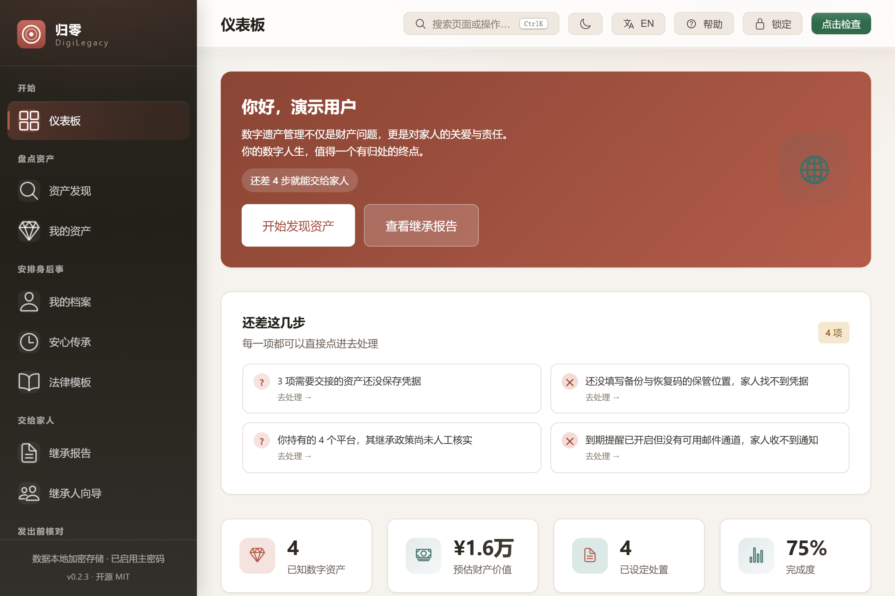
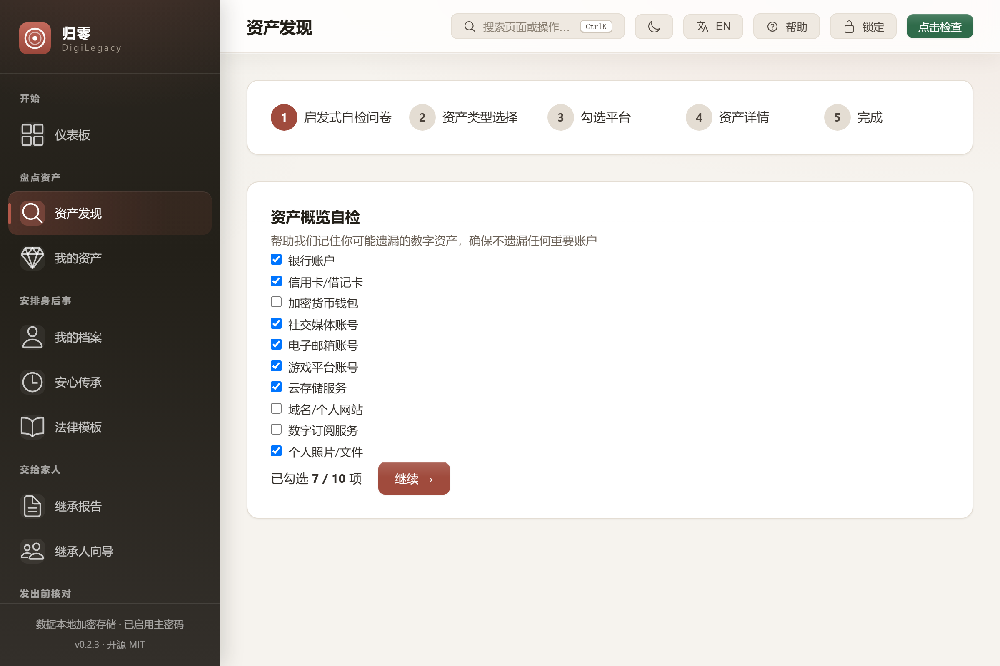
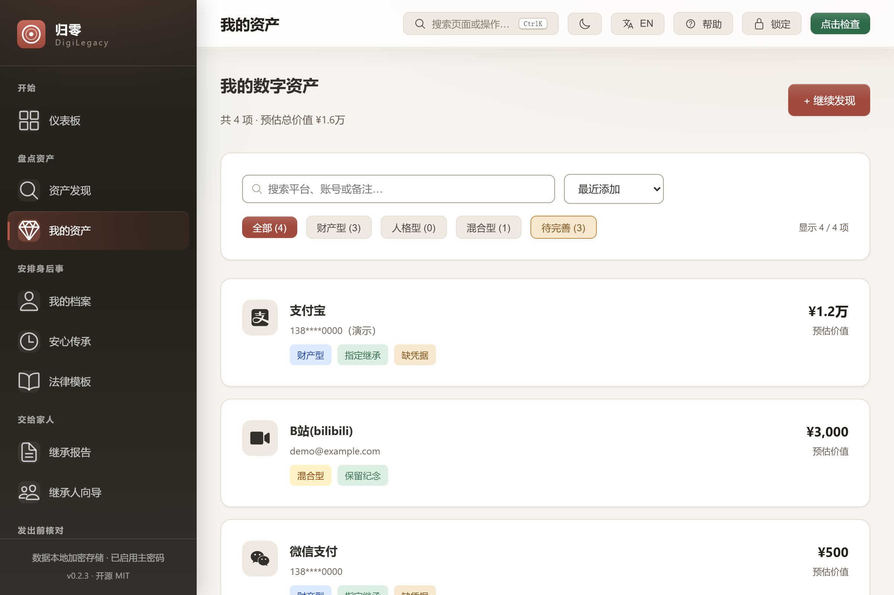
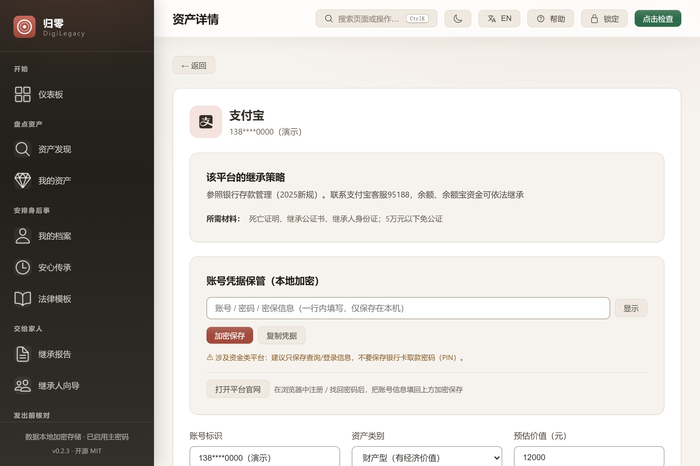
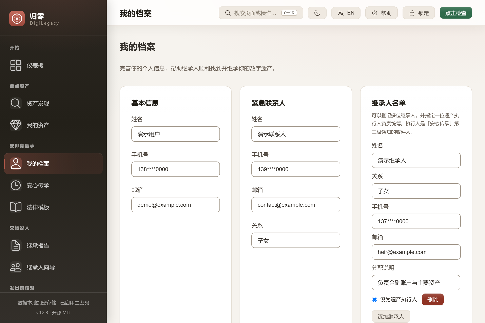
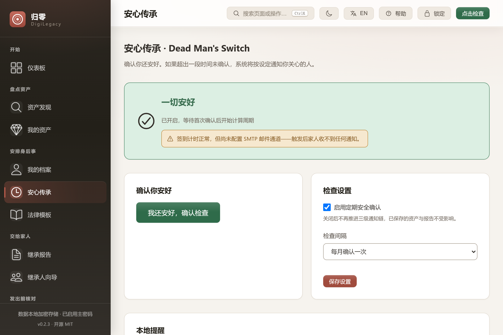
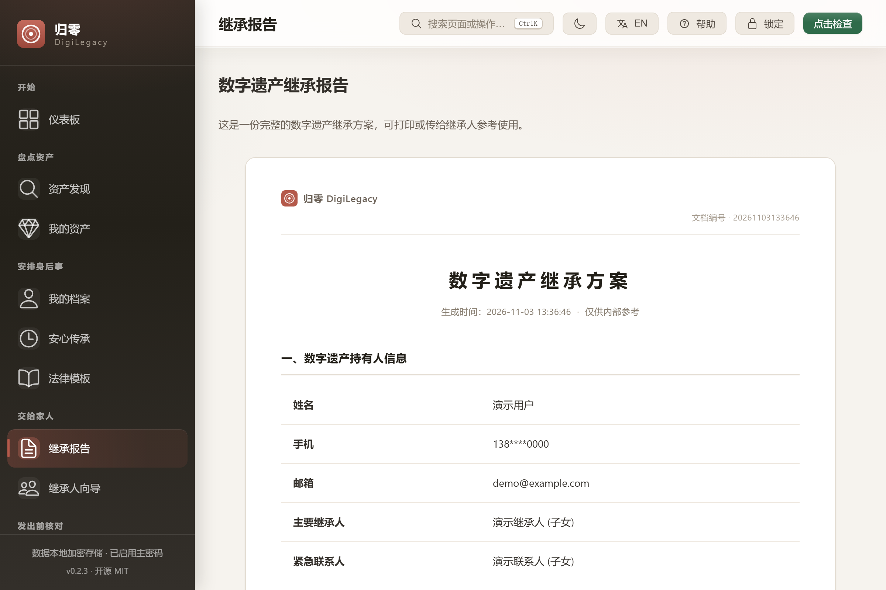
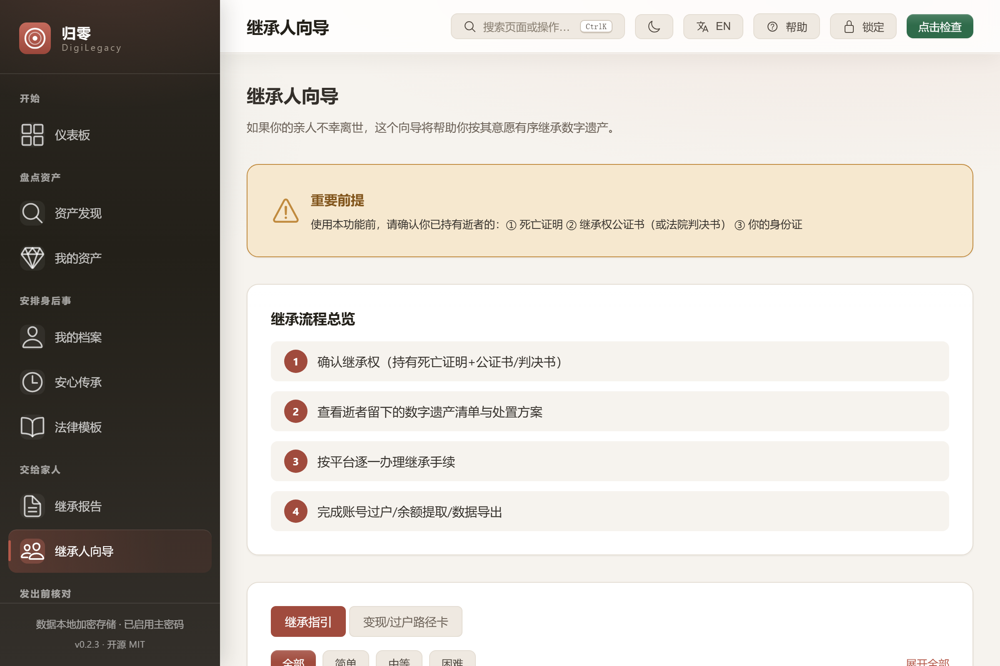
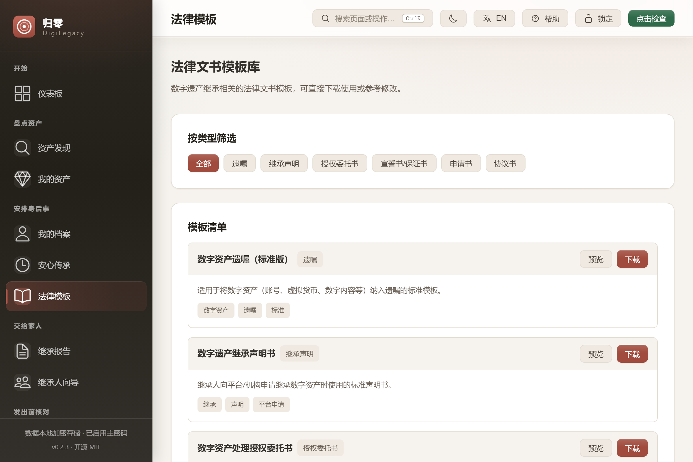
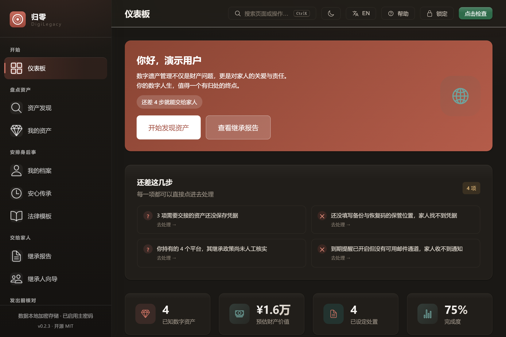

数字遗产管理及继承系统 · 开源 · 本地优先
帮你记录已知的数字资产，逐项决定它在你离开后应如何处置， 并导出面向家人的报告与执行清单—— 工作数据默认保存在你自己的电脑上；可选外部连接使用你自行配置的端点。

当一个人去世，家人往往既找不到、也拿不到他留在网上的东西。
支付余额、游戏资产、订阅额度、创作者收入——散落在几十个平台。连本人在世时都列不全。
钱包余额可以继承，账号本身往往不行。游戏账号已有支持财产权的判例。规则因平台而异，且都埋在用户协议里。
死循环：平台要继承公证书；公证处要先知道账户里有什么；家人不知道。遗产就这么沉睡下去。
完整链路：发现 → 登记 → 规划 → 文书 → 触发 → 执行。八项能力，一个本地数据库。
内置 152 个平台、16 个分类的继承政策库，配一份启发式自检问卷，专门用来挖出你早已忘记的账号。整个平台库可按名称搜索。
每项资产归为财产型、人格型或混合型。平台密码从不存储——应用只记录账号在哪里，不记录怎么登进去。
逐项选择：指定某人继承、变现后分配、保留纪念、授权查阅、彻底删除、捐赠，或暂不设定。
一键生成可打印的 HTML 报告，并导出 ZIP 工具包（报告、资产清单、统计摘要、使用说明）。全部是开放格式，不装本应用也能读。
定期确认安全，超期后按三级确认链推进：提醒你本人 → 通知紧急联系人 → 向遗产执行人发送继承指引。应用驻留托盘，每 30 分钟复评一次；可选零内容心跳只向用户配置的端点发送令牌。
向导按平台带家人走完办理流程、所需材料与过户路径；另有六类法律文书模板。
跨平台名、账号与备注的全文搜索；按时间、价值、平台名或处置状态排序；环形图一眼看清财产型 / 人格型 / 混合型占比。
可选择保存账号凭据，AES-256-GCM 在本机加密。报告与工具包不含凭据；加密备份只携带密文，没有主密码不可读。
Windows 10/11 原生桌面应用，安装包大小随版本构建变化，默认窗口 1200×800。界面提供简体中文与英文，可在标题栏切换。点击任意截图可看原图。









数字遗产是一个人最私密的数据。所以架构的做法是取消这个问题，而不是给你一个承诺。
本地优先设计：设置主密码后，账号标识、凭据、档案字段与继承人联系方式在写入数据库之前就已加密。新保险库使用 Argon2id 派生密钥；旧版 PBKDF2 格式仍可读取。密钥只驻留内存，锁定应用即清除。
设置主密码时生成一次性 24 位恢复密钥。忘记密码仍可重设并找回全部数据；每次修改主密码都会自动轮换恢复密钥。
没有 DigiLegacy 托管后端或账号体系。数据就是一个本地 SQLite 文件，你可以复制、备份或删除。可选的心跳、SMTP/IMAP 与 BYOK 助手在配置端点前不会建立外部连接。
如果你配置了心跳端点，它只会收到你提供的令牌，不会收到资产、凭据或姓名，也不是 DigiLegacy 托管的服务。仓库内含参考实现（server/heartbeat-server.mjs）。
诚实的边界：本地加密保护的是静态数据，无法阻止以你的身份运行的恶意软件，也无法阻止知道主密码的人。恢复密钥是唯一的后路——请手写下来并存放在离线位置。
完整链路——发现、登记、规划、文书、触发、执行——目前没有同类产品覆盖。现有工具各自只解决一个片段。
| 工具 | 覆盖范围 | 缺什么 |
|---|---|---|
| 归零 DigiLegacy | 覆盖六段规划链路 | 平台执行与法律效力仍需人工跟进 |
| Google 不活跃账户管理器 | 只覆盖 Google 账号 | 任何非 Google 平台；没有资产清单；没有规划流程 |
| Apple 数字遗产计划 | 遗产联系人访问 Apple ID | 没有清单、没有逐平台流程、没有处置规划 |
| Meta 纪念账号 | Facebook / Instagram | 只是被动标记，没有主动规划 |
| 密码管理器（1Password / Bitwarden 等） | 凭据交接 | 回答「谁拿到密码」，不回答「能不能继承、怎么继承」 |
| 死亡开关类工具（LastSignal、Aeterna 等） | 定时投递消息 | 没有资产清单、没有平台政策、没有逐项处置方案 |
| 线下遗嘱服务 / 公证处 | 纸质遗嘱 | 没有数字资产发现；没有平台级指引 |
从 Releases 下载安装包或 MSI。Windows 10/11，大小随版本变化，无需注册、无需账号。本地规划与导出可离线完成；可选外部连接需要用户自行配置。
# 1. 从 GitHub Releases 下载
# DigiLegacy_*_x64-setup.exe （安装版）
# DigiLegacy_*_x64_zh-CN.msi （MSI，适合批量部署）
# 2. 启动。你的数据保存在：
# %APPDATA%\com.digilegacy.app\digilegacy.db首次启动有 30 秒引导介绍每个界面。内置帮助中心讲清加密模型，以及提醒链真实的能做什么、不能做什么。想先看看？打开在线演示——同一套界面，数据是浏览器里的模拟数据，无需安装。
git clone https://github.com/badhope/digilegacy.git
cd digilegacy
npm install
npm run tauri:dev # 桌面开发模式
npm run tauri:build # 产出安装包
# 只跑前端（浏览器预览，数据为模拟）：
npm run dev # http://localhost:1420
# 测试
cd src-tauri && cargo test技术栈：Tauri 2（Rust） + Vue 3 + TypeScript + SQLite。源码清单为 267 项 Rust 测试、451 项前端测试与 80 项浏览器 E2E。
资产发现、加密保险库、处置规划、报告与工具包导出、托盘常驻的安心传承、恢复密钥、新手引导、帮助中心、零内容心跳客户端与参考服务器、离线政策补丁通道、资产搜索与排序、构成图、可交互浏览器演示、备份 v5、家人执行清单与离线 FAQ、多继承人与执行人、界面内 SMTP/IMAP 配置、保管位置、AI 初审 + 人工终审的审核管线（五个场景，法律文书走严格模式），以及默认关闭、无内置端点的可选自配助手/Agent。
更多界面语言（简体中文与英文已内置）、加密云备份（需要你自建或信任的服务器）、手机端安全确认（独立代码库）、通知动作按钮（原生通知操作）、macOS / Linux 安装包。这些均未开始。
逐条核实政策库——152 条中有 147 条明确标注「未核实」，只能人工核对；50 个高频平台的深度可执行指引；作者期 AI 生成个性化家人 FAQ，由持有者审校后冻结进工具包。约束与验收标准见路线图。另有机构对接、专利申请、社区共建政策库。
是。桌面应用采用 MIT 许可，可免费使用。它不包含 DigiLegacy 托管账号或云服务；可选功能使用的外部端点或邮箱由用户自行配置并承担费用。
本地数据和导出物仍保存在你控制的设备上。没有 DigiLegacy 托管账号需要关闭；可选连接仍取决于你配置的端点或邮箱。代码与导出格式公开，可以独立继续使用或维护。
绝不保存平台密码明文。若你主动保存凭据，它会用你的主密码在本机加密。凭据被刻意排除在所有导出的报告与工具包之外。
不能。任何声称能做到的工具，要么在说谎，要么需要你的账号密码。归零做的是引导式发现：它认识 152 个主流平台，用问题帮你回忆，再由你确认。最终清单永远由你决定。
托盘常驻（默认）时，应用每 30 分钟复评一次，并可设置开机自启。应用关闭后如需令牌级检查，请自行配置零内容心跳；它只向你提供的端点发送令牌，不是托管监护服务。
政策库覆盖 152 个中国大陆常用平台（微信、支付宝、淘宝、B 站、Steam 等），因为那里的平台继承规则最不透明、最少公开资料。架构本身并不绑定地区。
桌面 UI 已内置简体中文与英文，可在标题栏切换。本官网、README 与浏览器演示同样为中英双语，演示可以让你在安装前先点一遍每个界面。
欢迎提 Issue 与 PR，尤其欢迎政策纠错（附官方政策链接与来源引用）和翻译。政策库是纯 Rust 数据，扩展很容易。